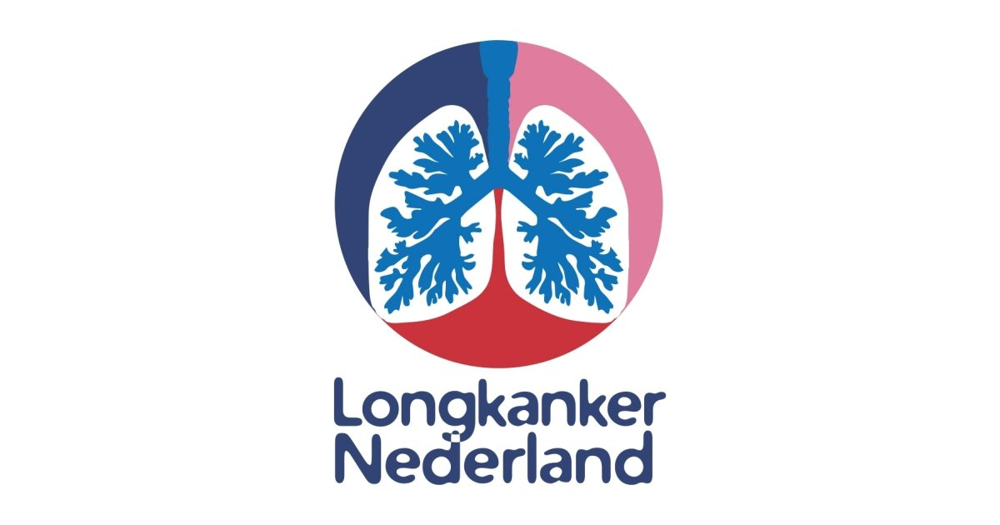

Welcome
My research focuses on the development of targeted cancer therapies. To identify suitable enzymes for this purpose, I investigate bacterial defence systems, particularly CRISPR-Cas. In parallel, I develop advanced gene delivery techniques to enable their translational impact.

This work is supported by NWO and KWF, with patient engagement via Longkanker Nederland.